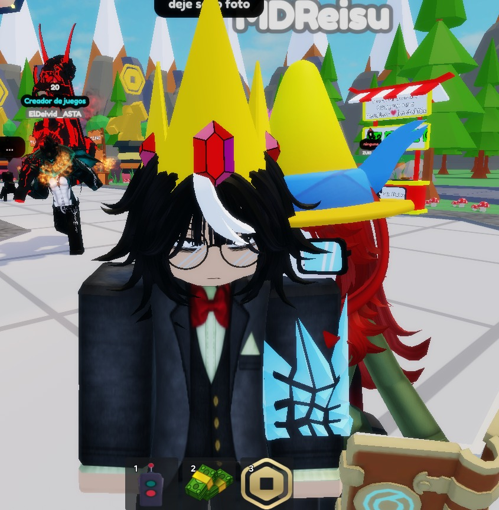
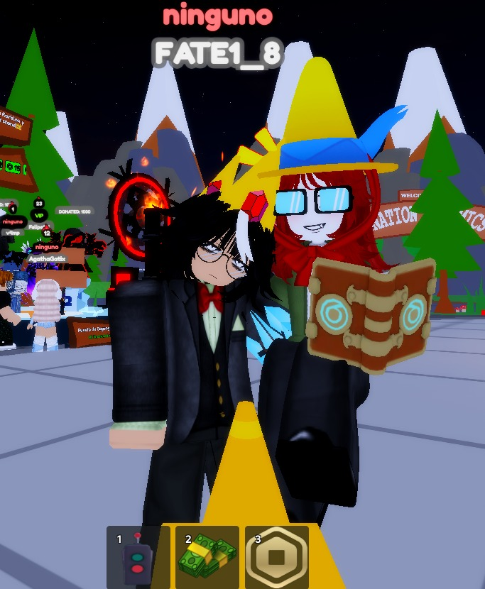
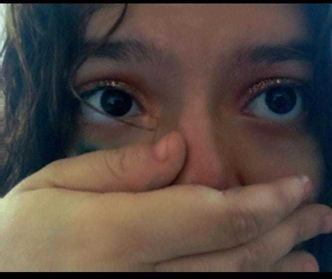
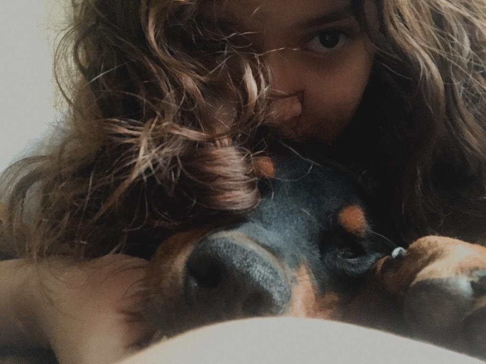
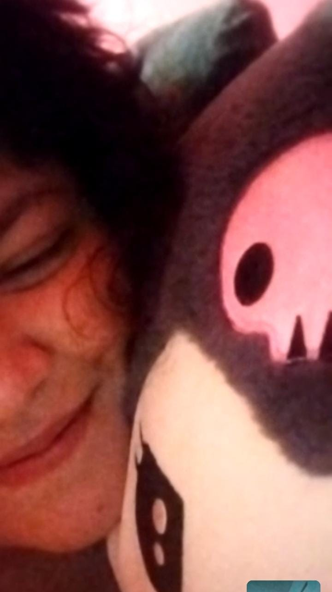
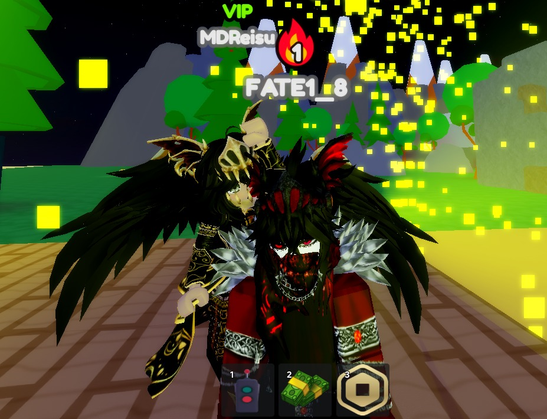
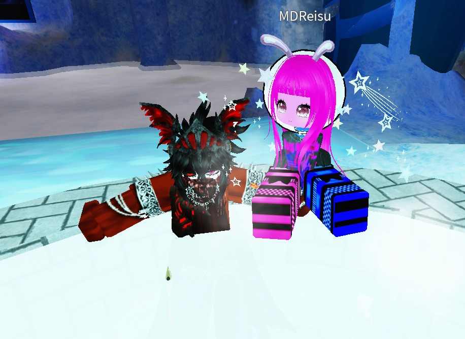
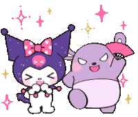

AAAAYYYY, Está fotito tan bella donde hicimos nuestro matching de la nobleza de las flores, que hasta usted le hace mención y referencia a ese título, ya que usted es ese pétalo que siempre siempre está floreciendo en cada día, con un color tan resplandeciente que a la primera vista me da un encanto como no tienes idea, este momento tan inolvidable que tendré en mi corazoncito siempre también guardado en foto como recuerdo, que cada lo pienso siempre tendré y me ocasionará la primera sonrisa y emoción de ese diaaaaaaaa, AYYY QUE BONITOSSSHHH

(MODO AMENAZA BONITAS SISIISS) otro grandioso momento como si no hubiese sido hace unos cuantos diaaas, y MI AMOR BELLO, NO SABES CUANTO CONTENTO ME PONE SIEMPRE SIEMPRE estar a tu lado, cada momento es un diamantito bello siempre y cuando sea contigo y solo contigo, me encantas demasiado y sin duda siempre le darás motivo a muchas cosas y así mismo siempre las volverás lindas, te amo mucho como de verdad no tienes idea, ME ENCANTA PASAR MUCHO MUCHO Y DEMASIADO TIEMPO CONTIGOOOOOOOOO

OTRO RECUERDITO MASSSHH DE UNOS DE LOS MATCHING FAVS DE TIII MI NIÑA, porque a mí niña hemosha le gusta hora de aventura sisiisis, y ahora que estaremos juntos, quiero tener mucho tiempo y horas pasándola juntos y haciendo recuerdos tan bonitossss mientras sea a tu lado, me encanta demasiado jugar y compartir momentos como estos y que se queden guardados como bellos y hermosos recuerdos, TE AMO TE AMOOOOOO💗💗

ES QUE DIOS MÍO, ESA MIRADA COMO ME MATAAAAAA, ERES UNA LUNITA, UN UNIVERSO ENTERO, UNA SUPERNOVA QUE CAUSA Y DESTELLO TAN BRILLOSO Y ESPECTACULAR Y SIEMPRE ME ENCANTARÁ VERLAAA, Me encanta todo de tí, Pero esos ojitos me tienen tan atrapado, que hasta son mi cuento favorito y es algo que nunca me cansaré de ver, tus cejas tan hermosas, y ese tono cálido que le da vida y color a este daltónico, con tan solo saber que tengo a esta bella y encantadora mujer a mi lado me pone demasiado contento como siempre te lo eh dicho, mi niñaaaaa de ojitos encantadoreeeess que siempre me tienen bien flechado, brillas y brillas tan lindo como dice la canción mi niña heermosaaaaaaa💗💗💗💘

AYYY QUIEN SON ESOS DOS BBCITOS TAN HERMOSHOS Y BELLOS???USTEDESSSSS, fotito q me mandaste de mi hijo y mi apreciada y futura esposa, como me encantan tus bellos y hermosos ojitos, que cada que lo veo siempre serán un mar de encantos ante mi, esa mirada tan profunda hace que yo vea un paraíso entero, vea un universo tan espectacular que siempre destacará ante todo, tu mirada siempre me cautivará ante todo y por eso siempre diré que tus ojitos tan hermosos y encantadores serán mis dos estrellitas favoritas cada que las vea, así si me dan ganas de salir por la noche y voltear a ver a mis dos estrellitas favoritas, ya que siempre me llenarán de tranquilidad y amor hacia ti mi niña hermosaaaaa💗💗💗💐

AYYYYYY ES QUE MIRAAAAAA, DIOS MIOOOO, MIS DOS NIÑAS HERMOSAS, PRECIOSAS Y ENCANTADORAAAAAAASSSSS, MI AMORCHITO Y MI HIJAAAAAA, TE AMO TE AMOO TE AMOOO MUAKMUAK, es que esa bella y hermosha sonrisa por Dios como ME MATAAA TAMBIÉNNN, Esa sonrisa y risa siempre siempre serán mis melodías favoritas, tu siempre serás mi película favorita que me encantará ver todos los diaaaasss, tu sonrisa tan encantadora de extremo a extremo, es lo que le da mucho más sentido a mi felicidad entera, de verdad que te amo demasiado y cada que sonríes es un pulsar en mi corazón, siempre serás tú, y tú, y solamente tú mi niña hermosaaaaaaa💗💗💗, siempre harás que mi felicidad salga a la luz cada que escuche tu hermoso y bello nombre en cualquier momento, mi mundo entero💗💗💗

OTRO PASITO MAS ADELANTE EN SU MOMENTO, DONDE YA MOSTRAMOS NUESTRO FOKIN TRUE LOVE ANTE TODOS, La chispa que ve de fondo es la que usted ocasiona siempre siempre que te veo o hablo contigo mi niña hemosha, siempre haciendo momentos tan especiales siempre y cuando sea contigo, UNA FOTO MÁS DE RECUERDITOOOO ESPECIAL DONDE ESTOY CON MI BELLA Y HERMOSA MUJER, que ya desde ese momento me tienes bien loco por ti corazón hermosho, pensar que en ese juego íbamos a hacernos más cercanos y platicar cada madrugada y día le ha dado un sentido a todo esto, no sabes cuánto me acuerdo de ti y de estos momentos cada que lo mencionan o que cuento el hecho de como nos fuimos haciendo más cercanos, sin duda alguna la pura felicidad completa contigo amorcito, y tener esto siempre sera una reliquia valiosa para mí💗💗💐💐

Esta foto siempre me recordará a las miles de indirectas que me tirabas y yo el más listo e inteligente nunca las captaba y pensar que en ese momento también era una indirecta ese juego me termina de confirmar que estoy bien ####### para no haberlas captado, Pero dejando de lado eso, en ese momento ya había de por medio y ya tu habías hecho esa chispa que haría un gran cambio entre nosotros, yo en ese momento como en madrugadas anteriores junto a ti me ponían tan contento y alegre, que todo momento empezaba a tener sentido alguno, mientras tú estuvieras a mi lado, haber compartido ese momento contigo hará que sea completamente inolvidable y siempre me sacará una sonrisa completa ver está bella y hermosa foto dónde hasta ahorita que estoy escribiendo esto me doy cuenta que ya habían 3 indirectas(Match, juego, canciones), Y por eso es algo que siempre me causará risa y felicidad acordarme de esto. TE AMO MUCHOOOO💗💗💘💘
💍 Permiteme ser quien este contigo en todo momento, con quien formes amorosamente lindos recuerdos, con quien escriba maravaillosas experiencias juntos ya que seremos los dos contra todooooooo.Quieres ser esa niña tan linda con quien forme y selle nuestro lazo divino, o en pocas palabras mi novia hermosha apreshiada?

💖 TE AMOOOOOOOO MUCHOTEE, ME ENCANTAS DEMASIADO, COMO TE AMOOOOO 💖
QUE COMIENCE NUESTRA LINDA AVENTURA JUNTITOS LOS DOS, TE AMO MI NOVIECITA LINDA💖💖💖